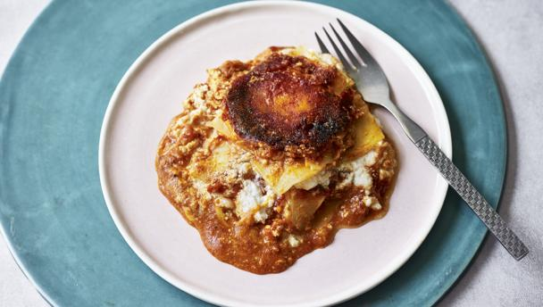

Lasagna In A Mug

Description
Lasagne really couldn’t get any easier.
Use a handful of shop-bought ingredients, a large mug and a microwave
to make this classic comfort food in less than 15 minutes.
Ingredients
- sunflower oil, for greasing
- 2 sheets dried lasagne, snapped in half
- 4 tbsp finely grated parmesan
- 4 tbsp ready-grated mozzarella cheese from a packet
- 4 tbsp ready-made tomato pasta sauce from a jar or homemade bolognese sauce
- 4 tbsp ricotta cheese from a tub
Steps
- Lightly grease a wide microwave-proof mug with sunflower oil.
- Put the lasagne sheets into a microwave-proof jug.
Add 450ml/16fl oz just-boiled water from a kettle.
Cook in the microwave on high for 4 minutes.
Turn the pasta over and cook for a further 4 minutes, or until tender.
Drain and rinse in cold water.
- Put one spoon of parmesan into the mug.
Top with one spoon of tomato sauce or bolognese.
Top with one spoon of mozzarella, then top with one of the lasagne squares.
Top with one spoon of ricotta.
Repeat the layers three more times, ending with a square of pasta.
- Microwave on high for 4-5 minutes or until hot.
- Put a serving plate on top of the mug.
Carefully invert the mug onto the plate and serve.